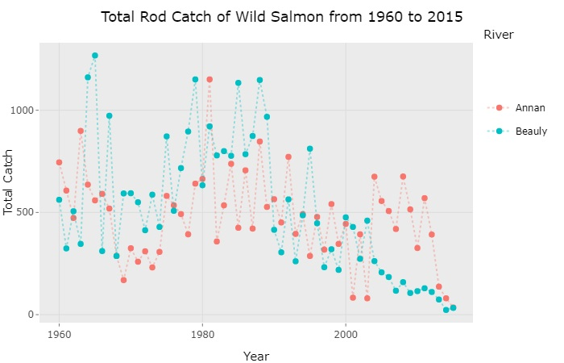

Welcome to my Shiny Server
Below you will find links to various apps for both teaching and research purposes. All the code is hosted on github. For my main website go to aj2duncan.com.
The apps below are mainly intended for teaching/demo purposes.

Disease Modelling
Examine some simple disease models. See how some straight forward changes can make a big difference to the spread of the disease.

Is correlation thing only thing you need to judge the fit of linear regression? Have a look at this app and see what you think. (modified from Shiny Ed)

This is a distribution calculator (modified from Shiny Ed) that allows you to conduct hypothesis testing amongst other things.

Can you guess the correlation (modified from Shiny Ed) in a quick game to help identify the value of the correlation coefficient from some random data.
Investigate recurrence relations and their limits in this Shiny app.
Catch Statistics
The Catch Statistics app was built to demonstrate shiny and some of its capabilities. It uses the catch numbers (from public data available from Marine Scotland) to plot the total catch per river and